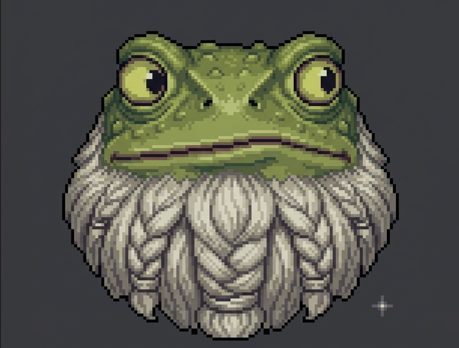
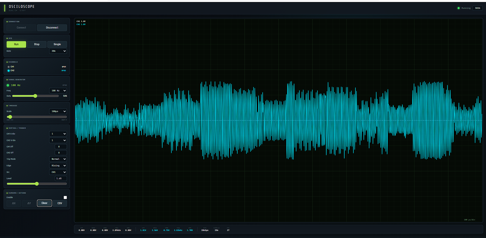
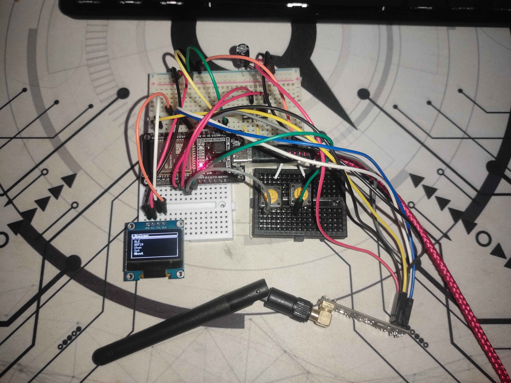
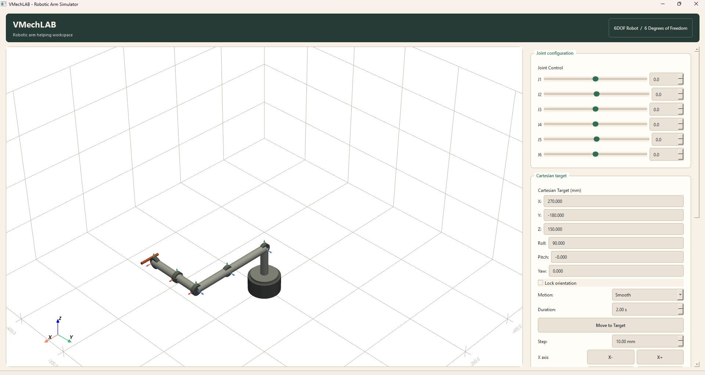

VMechLAB Robotic arm simulation software
BUILDINGA configurable robotic-arm simulator for kinematics, motion planning and 3D visualization.
ROBOTICS & AUTOMATION HIGHSCHOOLER
I'm doing my best at building stuff and learing more. You can mostly find me at my desk covered in wires and coffee.
I work across electronics, embedded programming, robotics, Python and CAD. Most of what's on this site was built from scratch — usually wrong the first 50 times tho, and tried to document my steps along the way.
I love understanding how something works. With that said my project do have alot of issues but im still learing.
Well hopefully living well, somewhere peaceful and doing what I love.
I just liked Iron Man wayyyy too much as a kid.
A configurable robotic-arm simulator for kinematics, motion planning and 3D visualization.
A nature-inspired, retro-modern operating system / web OS experiment.
A Dad like engeneering bot for Slack, on 24/7 and pretty "helpful".
Dual-channel USB oscilloscope with, with PC display and OLED feedback.
A personal project focused on experimentation and development. Details are still being written up.





Outside of building things, this is roughly what takes up the rest of my small brain. Pinned to the board exactly as messy as it is in real life.
Finnaly COUR 4 is here.
The S2 > S1.
Gabimaru the CRAZY.
S2 anime only. Please no spoilers.
Slowest show, not as slow as that grandma.
Platinum'd it. Still playing it tho.
Deflection timing rewired my brain that I could deflect a meteor.
3k+ hours and I still can't build a decent base.
Cant wait for the new gameee.
Fight a Volotile hand to hand for the 100 time.
Portal logistics is a personality trait.
Four sessions a week. Takes alot of work to be mid.
Slow 10Ks through the forest. No watch, no pace.
Working out a little more.
Older manual diesel car + toolbox + Aliexpress = happiness.
Kerbal doesn't count, but it should.
Never enough caffeen recomended 400mg a day is a lie.
Best brain debugging tool ever invented trust.
More notes get pinned as things come up. The board is never trully "done".
Got into Mechatronics specialized High School.
Bought a Aruino starter kit.
This is where it snowballed out of controll.
Hopefully getting into university in Slovenia and continuing to build stupid things.
Most of what I build ends up here, eventually. Some of it half-finished & some of it stable enough to depend on.
@vmechlab on GitHub